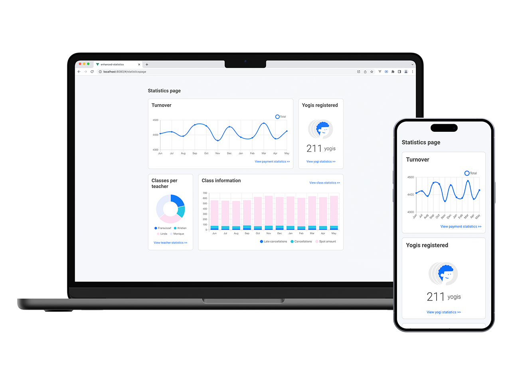
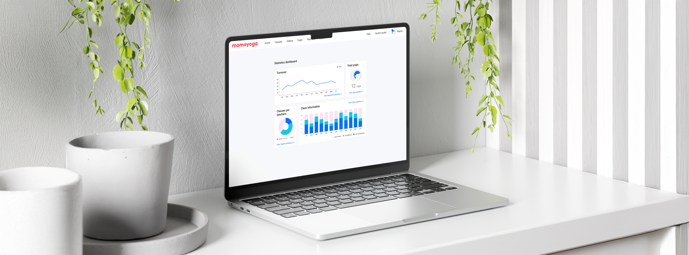
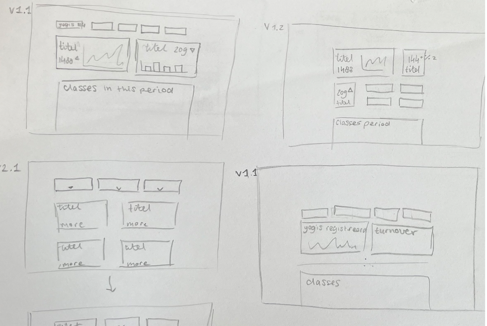
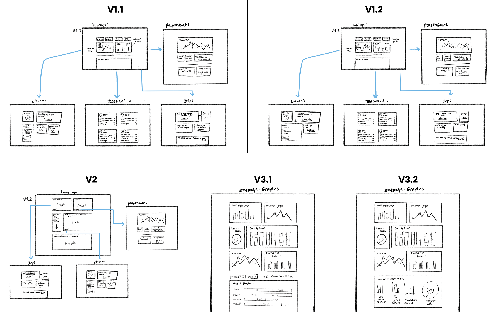
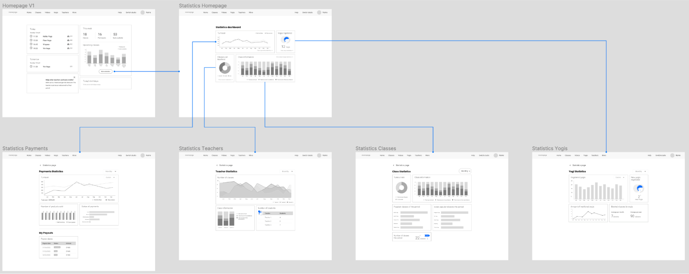

Statistieken dashboard
Onderzoek, concepting, design en front-end - 2023

Onderzoek, concepting, design en front-end - 2023

Momoyoga is een bedrijf die administratie/boekingssoftware maakt voor yogastudio’s. Tijdens mijn afstudeerstage bij Momoyoga kreeg ik de opdracht om het huidige statistiekendashboard voor klanten te verbeteren. Het doel hiervan was om de gebruikerservaring te verhogen.

Om de volledige context van de opdracht te begrijpen, zijn er
verschillende onderzoeken gedaan naar: de doelgroep (wie is de
doelgroep, wat zijn de behoeften en pijnpunten en wat hun huidige
ervaring is met het statistiekendashboard), de concurrenten, andere
statistiekdashboards, hoe je user engagement kunt verhogen en welke
data Momoyoga heeft die bruikbaar is en welke data nog meer nodig
is.
Door middel van deze onderzoeken en een survey met de doelgroep,
werd het duidelijk dat de yogadocenten nauwelijks gebruik maakten
van het statistiekendashboard, omdat ze te weinig informatie
terugkregen over hun studio.
Op basis van deze inzichten heb ik drie concepten opgesteld om de
user engagement van het statistiekendashboard te verhogen:
1. Meer informatie tonen op het statistiekendashboard.
Verdeel
dit onder meerdere categorieën die meer informatie bieden.
2.
Verwijzen naar het statistiekendashboard bij andere plekken op de
Momoyoga website. Zet het dashboard meer in de spotlight.
3.
Forecast berichten. Op basis van datapatronen binnen een yogastudio,
kan er een
forecastbericht gestuurd worden. Dit moet de yogadocenten
een stukje personalisatie bieden.
Met deze informatie ben ik begonnen met het maken van
verschillende schetsen en eerste concepten.


Allereerst heb ik voor ieder concept schetsen gemaakt. Deze ideeën heb ik eerst op papier uitgewerkt en vervolgens is dit digitaal netter uitgewerkt. Tijdens de schetsfase heb ik ook al rekening gehouden met de user flow, zodat de verschillende pagina’s logisch op elkaar aansloten.

Na het schetsen, heb ik de concepten vertaald naar wireframes voor zowel desktop als voor mobiel. Ook hier
zijn er verschillende iteraties gemaakt, waarbij ik de user flow en gebruikersvriendelijkheid als uitgangspunt
heb genomen.
Deze wireframes werden besproken met de stakeholders en het development team. Op basis van de feedback heb ik
de ontwerpen aangescherpt en uiteindelijk ontstonden er definitieve wireframes die als goede basis diende voor
het ontwerpen.

Voordat ik aan het daadwerkelijke ontwerpenbegon, heb ik eerst de tijd genomen om componenten en een
stijlbibliotheek aan te maken in Figma. Dit zorgde ervoor dat ik op een efficiënte en consistente manier mijn
wireframes kon uitwerken met kleuren, typografie en iconen.
Als laatste is er een user test opgezet om mijn ontwerp te toetsen bij de doelgroep. Hiervoor heb ik een
testplan opgesteld met het onderzoeksdoel, de belangrijkste eisen en de vragen die ik wilde stellen tijdens
het interview.
Na het afnemen van de interviews heb ik de resultaten gebundeld en de belangrijkste feedbackpunten
geanalyseerd. Op basis hiervan heb ik verschillende verbeteringen doorgevoerd in het ontwerp. Op deze manier
kon ik het dashboard laten aansluiten op de behoeftes en verwachtingen van de doelgroep.


Om het project te voltooien, heb ik het dashboard ook gerealiseerd met front-end coderen. Om het dashboard
meteen te kunnen integreren op het Momoyoga-platform, koos ik het JavaScript framework Vue.js. Vue.js was voor
mij al bekend, dus ik kon hiermee meteen aan de slag. Om te werken met data en de statistieken heb ik advies
gezocht bij een ontwikkelexpert. Die raadde de het JavaScript programma Chart.js aan. Dit programma kon de
nodige data ophalen en teruggeven als grafiek binnen de Vue.js-omgeving.
Uiteindelijk heb ik het volledige dashboard gerealiserend met front-end, maar wel gebruik gemaakt
van
placeholder data, omdat de software-afdeling de koppeling naar de daadwerkelijke data nog moest maken.